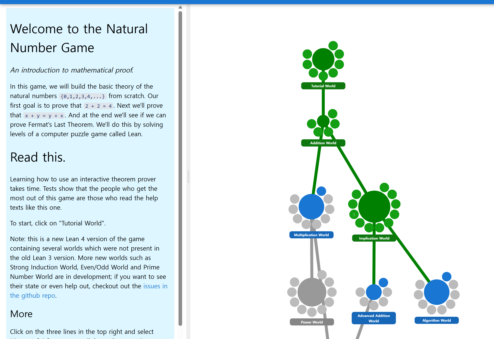

checkpoint
https://adam.math.hhu.de/#/g/leanprover-community/nng4/world/Algorithm/level/0

WIL
Tutorial world
rfl
(repeat) rw [h] (* 쓰면 %s/h의LHS/h의 RHS/g*)
rw [<- h] (* \l (<-) 쓰면 %s/h의RHS/h의 LHS/g*)
rw [h c] (* 변수 c에 대해 thm 적용*)
nth_rewrite 3 [h] (* 3번째 적용례에만 thm 적용*)
add_succ x d : x + succ d = succ (x + d)
Addition world
induction (* 0 + n = n을 증명키 위해. [add_zero, add_succ]을 n번 노가다할 필요없이.*)
induction n with d hd
lemma
add_assoc
add_comm : repeat적용시 infinite recursion 넘김.

Implication world
exact (* rfl과 비슷하지만, 좌변=우변이 아니라 assumption중 하나와 같을때 끝내기. *)
rw [l] at [h] (* l을 h에 적용.*)
apply h2 at h1 (* h2 (implication)을 h1에 적용.*)
succ_inj (* Peano arithmetic의 첫 thm. implication임.*)
intro h (* h라는 가정하기. (Goal의 antecedent)*)
\(\neq\)
In Lean, a ≠ b is notation for a = b → False
Algorithm world
simp only [add_assoc, add_left_comm, add_comm]
macro "simp_add" : tactic => `(tactic|(
simp only [add_assoc, add_left_comm, add_comm]))